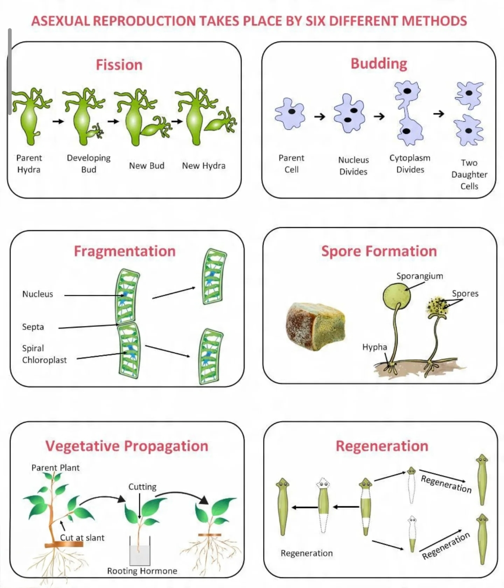
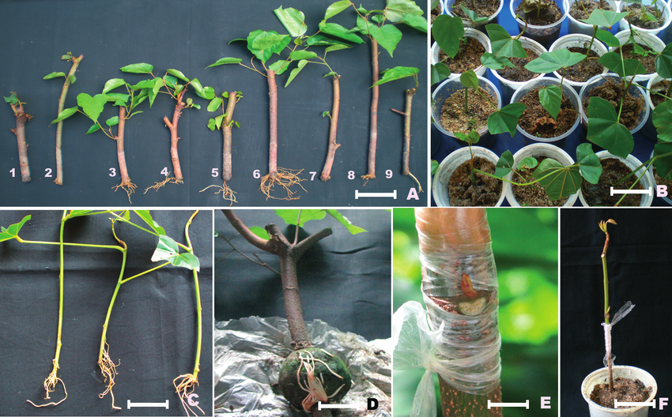
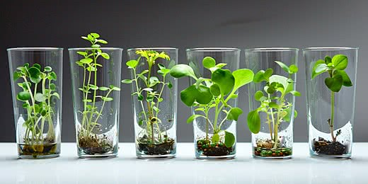
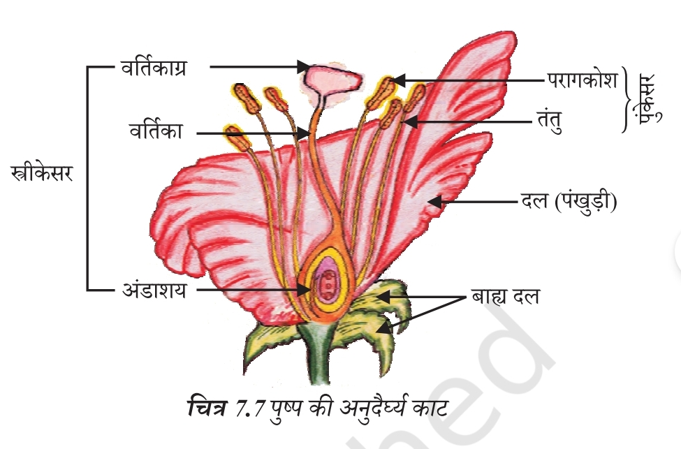
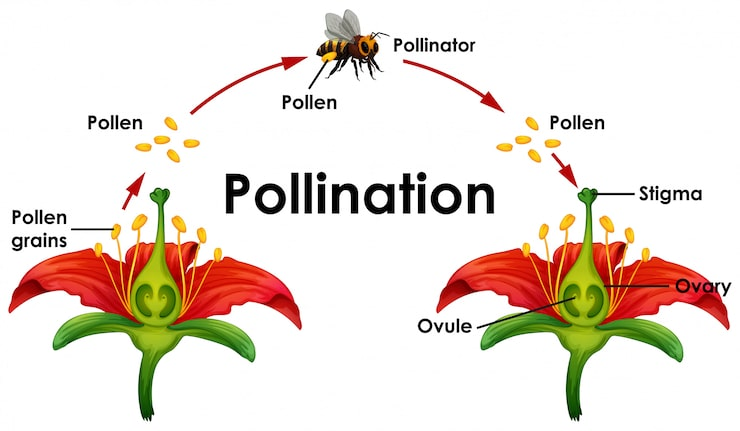
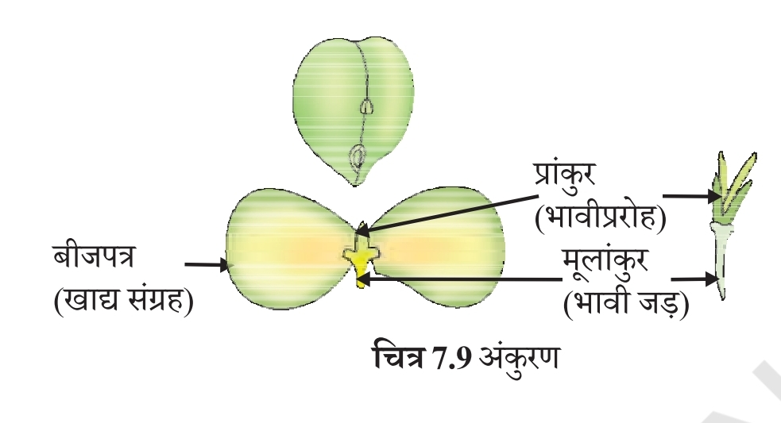
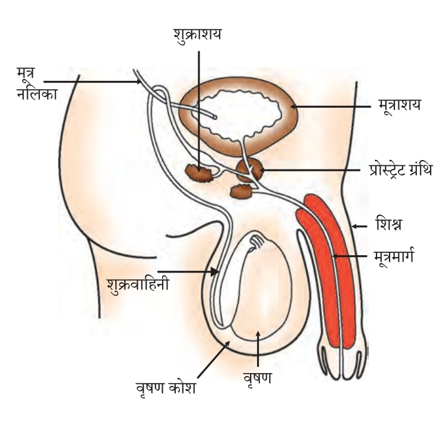
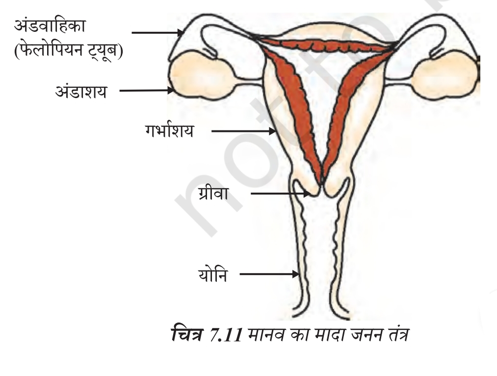
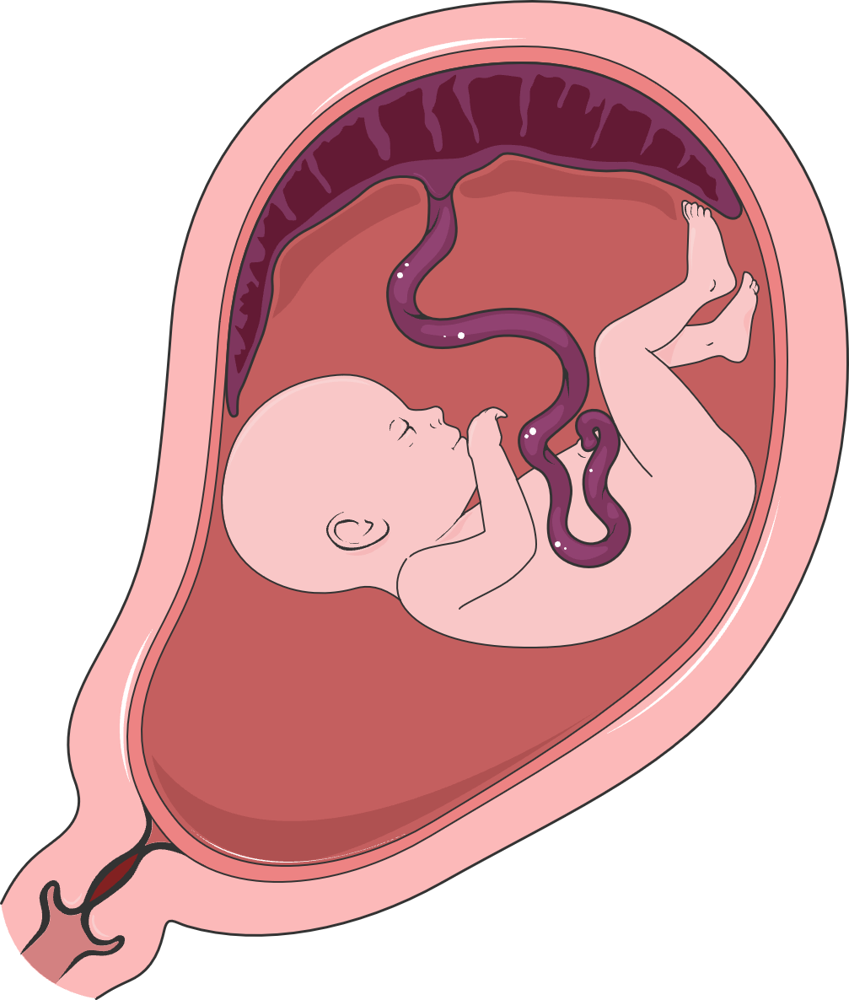
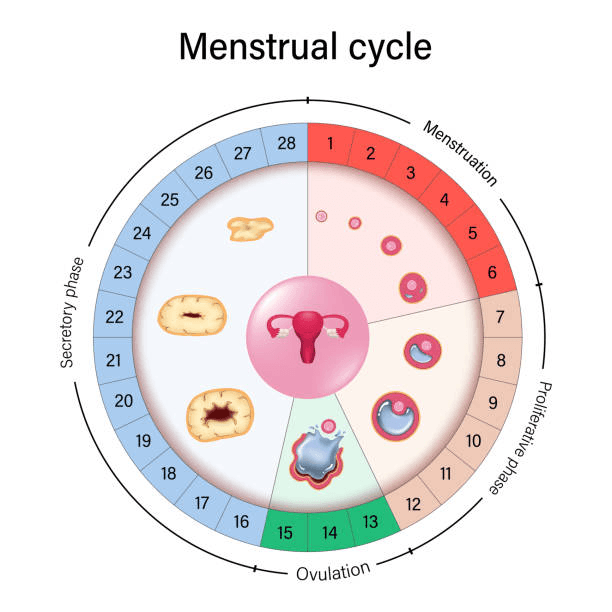

1. जनन (Reproduction)
• सभी जीव अपनी प्रजाति की निरंतरता बनाए रखने के लिए जनन करते हैं।
• किसी प्रजाति में पाए जाने वाले जीवों की संख्या उस प्रजाति के अस्तित्व और निरंतरता का संकेत देती है।
• DNA में आनुवंशिक गुणों की जानकारी होती है।
• जनन की मूल घटनाओं में से एक DNA की प्रतिकृति (DNA Copying) बनाना है।
• DNA शरीर की संरचना और कार्यों से संबंधित आनुवंशिक सूचना का ब्लूप्रिंट प्रदान करता है।
• DNA की प्रतिकृति के दौरान होने वाली कुछ विविधताएँ (Variations) प्रजाति के अस्तित्व के लिए उपयोगी होती हैं।
DNA → आनुवंशिक सूचना → DNA की प्रतिकृति → विविधता → प्रजाति की निरंतरता
2. अलैंगिक जनन (Asexual Reproduction)
जब नई पीढ़ी का निर्माण केवल एक जनक द्वारा होता है, तो इसे अलैंगिक जनन कहते हैं।

① विखंडन (Fission)
एककोशिकीय जीवों में कोशिका विभाजन द्वारा नए जीवों का निर्माण होता है।
द्विखंडन (Binary Fission)
• एक जीव दो संतति जीवों में विभाजित हो जाता है।
• उदाहरण: अमीबा, लीशमैनिया
बहुखंडन (Multiple Fission)
• एक जनक कोशिका से अनेक संतति कोशिकाएँ बनती हैं।
• उदाहरण: प्लाज्मोडियम (मलेरिया परजीवी)
② मुकुलन (Budding)
जनक जीव के शरीर पर एक छोटी-सी कली या मुकुल विकसित होती है। यह धीरे-धीरे बढ़कर अलग होकर नया जीव बनाती है।
उदाहरण: यीस्ट, हाइड्रा
③ खंडन (Fragmentation)
स्पाइरोगाइरा जैसे बहुकोशिकीय जीवों में शरीर छोटे-छोटे खंडों में टूट सकता है और प्रत्येक खंड विकसित होकर नया जीव बना सकता है।
उदाहरण: स्पाइरोगाइरा
④ पुनर्जनन (Regeneration)
किसी जीव के शरीर का भाग अलग होने के बाद उससे नया जीव विकसित हो सकता है।
उदाहरण: प्लेनेरिया, हाइड्रा
पुनर्जनन और खंडन एक ही प्रक्रिया नहीं हैं। पुनर्जनन में शरीर के कटे हुए भाग से नई संरचनाएँ बनती हैं।
3. कायिक प्रवर्धन (Vegetative Propagation)
पौधों में जड़, तना या पत्ती जैसे कायिक भागों से नया पौधा उत्पन्न होना कायिक प्रवर्धन कहलाता है।

कायिक प्रवर्धन की तकनीक
परतन (Layering)
उदाहरण: गन्ना
कलम (Cutting)
उदाहरण: गुलाब
रोपण (Grafting)
उदाहरण: अंगूर
लाभ
• कम समय में नए पौधे प्राप्त किए जा सकते हैं।
• ऐसे पौधों को भी उगाया जा सकता है जिनमें बीज बनाने की क्षमता कम या समाप्त हो गई हो।
उदाहरण: केला, संतरा, गुलाब, चमेली
• नए पौधे सामान्यतः जनक पौधे के समान आनुवंशिक रूप से होते हैं।
4. ऊतक संवर्धन (Tissue Culture)

• पौधे के ऊतक या कोशिका को पौधे के किसी भाग से अलग किया जाता है।
• इन्हें कृत्रिम पोषक माध्यम में रखा जाता है।
• कोशिकाएँ विभाजित होकर कोशिकाओं का समूह बनाती हैं, जिसे कैलस (Callus) कहते हैं।
• इससे नए पौधे विकसित किए जा सकते हैं।
• इस तकनीक से रोग-मुक्त पौधों का उत्पादन किया जा सकता है।
• इसका उपयोग सजावटी पौधों सहित अनेक पौधों के बड़े पैमाने पर उत्पादन में किया जाता है।
5. बीजाणु निर्माण (Spore Formation)
कुछ जीव बीजाणु बनाकर जनन करते हैं।
6. लैंगिक जनन (Sexual Reproduction)
जब जनन में नर और मादा जनन कोशिकाएँ (Gametes) शामिल होती हैं, तो इसे लैंगिक जनन कहते हैं।
• लैंगिक जनन में सामान्यतः दो जनकों की भागीदारी होती है।
• इसमें DNA की प्रतिकृति के साथ कोशिकीय संगठन में परिवर्तन और जनन कोशिकाओं का संलयन होता है।
• लैंगिक जनन से उत्पन्न संतानों में अधिक विविधता (Variation) होती है।
नर युग्मक
Male Gamete
मादा युग्मक
Female Gamete
लैंगिक जनन → नर युग्मक + मादा युग्मक → निषेचन → युग्मनज
7. पुष्पी पौधों में लैंगिक जनन
आवृतबीजी (Angiosperms) पौधों के जनन अंग पुष्प में स्थित होते हैं।

| जनन भाग | भूमिका |
|---|---|
| पुंकेसर (Stamen) | नर जनन अंग |
| स्त्रीकेसर (Carpel/Pistil) | मादा जनन अंग |
एकलिंगी पुष्प
जिस पुष्प में या तो पुंकेसर या स्त्रीकेसर में से केवल एक उपस्थित हो।
उदाहरण: पपीता, तरबूज
उभयलिंगी पुष्प
जिस पुष्प में पुंकेसर और स्त्रीकेसर दोनों उपस्थित हों।
उदाहरण: गुड़हल, सरसों
8. पुंकेसर (Stamen)
पुंकेसर नर जनन अंग है।
परागकोश (Anther)
इसमें परागकण बनते हैं।
तंतु (Filament)
परागकोश को सहारा देता है।
9. स्त्रीकेसर (Pistil / Carpel)
मुख्य भाग
| भाग | विशेषता |
|---|---|
| वर्तिकाग्र (Stigma) | शीर्ष भाग, जो सामान्यतः चिपचिपा होता है। |
| वर्तिका (Style) | लंबा एवं पतला भाग। |
| अंडाशय (Ovary) | निचला फूला हुआ भाग। |
• अंडाशय में बीजांड (Ovules) होते हैं।
• प्रत्येक बीजांड में एक अंड कोशिका होती है।
10. परागण (Pollination)
परागकणों का परागकोश से वर्तिकाग्र तक स्थानांतरण परागण कहलाता है।

स्वपरागण (Self-Pollination)
जब परागकण उसी पौधे के किसी फूल के वर्तिकाग्र तक पहुँचते हैं, तो इसे स्वपरागण कहते हैं।
परपरागण (Cross-Pollination)
जब परागकण एक पौधे के फूल से उसी प्रजाति के दूसरे पौधे के फूल के वर्तिकाग्र तक पहुँचते हैं, तो इसे परपरागण कहते हैं।
वायु • जल • प्राणी
11. निषेचन (Fertilisation)
• परागकण के अंकुरण से परागनली (Pollen Tube) बनती है।
• परागनली वर्तिका से होकर अंडाशय में स्थित बीजांड तक पहुँचती है।
• नर युग्मक और मादा युग्मक के संलयन को निषेचन कहते हैं।
• निषेचन के बाद युग्मनज (Zygote) बनता है।
• युग्मनज से भ्रूण (Embryo) विकसित होता है।
बीजांड → बीज
अंडाशय → फल
12. बीज के मुख्य भाग

| भाग | कार्य |
|---|---|
| प्रांकुर (Plumule) | भावी तना |
| बीजपत्र (Cotyledon) | भोजन का भंडार |
| मूलांकुर (Radicle) | भावी जड़ |
13. मानव में लैंगिक जनन
किशोरावस्था के दौरान लड़के और लड़कियों में कई परिवर्तन होते हैं।
लड़कों में
- चेहरे पर बाल आना
- मूँछ और दाढ़ी आना
- आवाज में परिवर्तन
- जनन अंगों का विकास
लड़कियों में
- स्तनों के आकार में वृद्धि
- जनन अंगों का विकास
- अन्य द्वितीयक लैंगिक लक्षणों का विकास
14. नर जनन तंत्र (Male Reproductive System)

वृषण (Testes)
• शुक्राणुओं का निर्माण वृषण में होता है।
• शुक्राणु निर्माण के लिए शरीर के सामान्य तापमान से कुछ कम तापमान उपयुक्त होता है।
• वृषण टेस्टोस्टेरोन हार्मोन का उत्पादन भी करते हैं।
• टेस्टोस्टेरोन पुरुषों में जनन अंगों के विकास तथा यौवनावस्था के लक्षणों को नियंत्रित करता है।
शुक्राणु (Sperm)
शुक्राणु में:
- आनुवंशिक पदार्थ
- पूँछ / फ्लैजेलम
होता है।
पूँछ शुक्राणु को मादा जनन कोशिका की ओर तैरने में सहायता करती है।
शुक्राणु का मार्ग
15. मादा जनन तंत्र (Female Reproductive System)

अंडाशय (Ovary)
• अंड कोशिका का निर्माण/परिपक्वता अंडाशय में होती है।
• सामान्यतः प्रत्येक मासिक चक्र में एक अंड कोशिका परिपक्व होती है।
अंडवाहिका (Fallopian Tube / Oviduct)
• अंडाशय से निकली अंड कोशिका को गर्भाशय की ओर ले जाती है।
• निषेचन सामान्यतः अंडवाहिका में होता है।
गर्भाशय (Uterus)
• निषेचित अंड से विकसित भ्रूण गर्भाशय की आंतरिक परत में स्थापित होता है।
• भ्रूण को माँ के रक्त से पोषण प्राप्त होता है।
16. प्लेसेंटा (Placenta)

प्लेसेंटा एक विशेष संरचना है जो माँ और भ्रूण के बीच पदार्थों के आदान-प्रदान में सहायता करती है।
माँ → भ्रूण
- ग्लूकोज़
- ऑक्सीजन
- अन्य आवश्यक पदार्थ
भ्रूण → माँ
- अपशिष्ट पदार्थ
17. मासिक धर्म (Menstruation)

• यदि अंड कोशिका का निषेचन नहीं होता, तो वह लगभग एक दिन तक जीवित रहती है।
• निषेचन न होने पर गर्भाशय की मोटी एवं रक्तवाहिनियों वाली आंतरिक परत टूटकर बाहर निकल जाती है।
• रक्त और श्लेष्मा (Mucus) के साथ इस परत का योनि मार्ग से बाहर निकलना मासिक धर्म (Menstruation) कहलाता है।
• सामान्यतः यह चक्र लगभग 28 दिनों का माना जाता है, हालांकि वास्तविक चक्र की अवधि व्यक्ति-व्यक्ति में बदल सकती है।
18. जनन स्वास्थ्य (Reproductive Health)
कुछ यौन संचारित संक्रमण (STIs) बैक्टीरिया द्वारा तथा कुछ वायरस द्वारा होते हैं।
बैक्टीरिया से होने वाले संक्रमण
- गोनोरिया
- सिफलिस
वायरस से होने वाले संक्रमण
- HIV/AIDS
- जननांग हर्पीस आदि
गर्भनिरोधक विधियाँ
गर्भधारण को रोकने के लिए विभिन्न विधियाँ अपनाई जाती हैं:
- कंडोम
- गर्भनिरोधक गोलियाँ
- IUCD / कॉपर-टी
- अन्य चिकित्सकीय गर्भनिरोधक विधियाँ
कंडोम गर्भधारण रोकने के साथ-साथ कई यौन संचारित संक्रमणों के जोखिम को कम करने में भी सहायता करता है।
⚡ Railway Exam Quick Revision
DNA → आनुवंशिक सूचना
अमीबा → द्विखंडन
प्लाज्मोडियम → बहुखंडन
यीस्ट → मुकुलन
स्पाइरोगाइरा → खंडन
प्लेनेरिया → पुनर्जनन
राइजोपस → बीजाणु निर्माण
ब्रायोफिलम → पत्ती द्वारा कायिक प्रवर्धन
पुंकेसर → नर जनन अंग
स्त्रीकेसर → मादा जनन अंग
परागकोश → परागकण
अंडाशय → बीजांड
नर युग्मक + मादा युग्मक → युग्मनज
बीजांड → बीज
अंडाशय → फल
वृषण → शुक्राणु + टेस्टोस्टेरोन
प्लेसेंटा → माँ और भ्रूण के बीच पदार्थों का आदान-प्रदान
गोनोरिया, सिफलिस → बैक्टीरिया
HIV/AIDS → वायरस